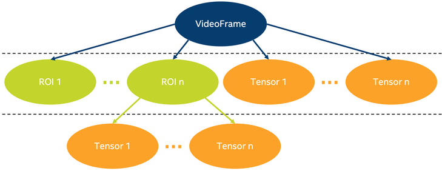

Intel® Deep Learning Streamer (Intel® DL Streamer) API reference#
Overview#
This documentation describes Intel® DL Streamer metadata API (Application Programming Interface) that allows you to access and to control inference results obtained from Intel® DL Streamer plugin elements, such as gvainference, gvadetect, gvaclassify. In Intel® DL Streamer, all inference results (both raw and interpreted) are passing through GStreamer pipeline being attached to GstBuffer objects as GStreamer metadata.
For better developer experience we provide Intel® DL Streamer API (C++ and Python versions) which simplifies any job you want to perform on inference results, like consuming and further reusing, additional custom post-processing, and more. Also, most of the times, Intel® DL Streamer API allows you to abstract from internal inference results as GStreamer metadata.
In Intel® DL Streamer API, most of the job is done by these classes: GVA::VideoFrame, GVA::RegionOfInterest & GVA::Tensor (C++ version is referenced here, but Python version is available as well). Take a look at schematic picture below, which represents how these classes relate.
On this picture you can see 3 classes mentioned above. GVA::VideoFrame is the most high-level object, which is constructed from GstBuffer. It means that GVA::VideoFrame represents one image (one video frame). One GVA::VideoFrame can contain from 0 to many GVA::RegionOfInterest objects (ROI on picture above). GVA::RegionOfInterest describes detected object, e.g. its bounding box coordinates and label. Number of GVA::RegionOfInterest objects added to GVA::VideoFrame depends on whether detection already happened on this image (by gvadetect element in a pipeline) and whether this image contains patterns which are recognized by detection models (for example, it could be image with humans faces and detection model, which was trained to detect faces).
Similar, one GVA::VideoFrame can contain from 0 to many GVA::Tensor objects, which are products of running inference (by gvainference element in a pipeline) on full video frame. Such GVA::Tensor contains raw inference result which can be consumed and post-processed (interpreted) any way you like. For example, if you have custom detection model, which is not supported by gvadetect, you can run inference with gvainference element in a pipeline, and obtain results as a GVA::Tensor object. You can then use these results for getting regions of interest of this frame with your post-processing algorithm, and add your own GVA::RegionOfInterest to GVA::VideoFrame with GVA::VideoFrame::add_region. Tutorial devoted to this use case you can find in Custom post-processing tutorial section.
GVA::RegionOfInterest can also contain multiple GVA::Tensor objects, which are products of running classification (by gvaclassify element in a pipeline) on GVA::RegionOfInterest they belong to. Such GVA::Tensor can contain GVA::Tensor::label which is string containing interpreted classification result (examples are person’s age, car’s color, etc.). GVA::Tensor also stores raw data (model output blob), which can be obtained with GVA::Tensor::data. Normally, one GVA::Tensor contains some additional detection information, which can be obtained with GVA::RegionOfInterest::detection. You can check if GVA::Tensor is detection tensor with GVA::Tensor::is_detection. Detection GVA::Tensor extends detection information contained in GVA::RegionOfInterest.
Any modification you perform using Intel® DL Streamer API will affect underlying metadata as though you modified it directly. For example, you can add GVA::RegionOfInterest or GVA::Tensor objects to GVA::VideoFrame, and real GStreamer metadata instances will be added to GstBuffer of current GVA::VideoFrame. It means, the objects you added will behave as if they were produced by GVA elements mentioned above. You will be able to reach these objects further by pipeline using both internal metadata representation and Intel® DL Streamer API. Also, any Intel® DL Streamer elements that rely on inference results will employ objects you added. For example, gvawatermark will render on screen these objects (for example, it will draw bounding box for added GVA::RegionOfInterest).
Inference results flow#
Video analytics pipeline is a GStreamer pipeline with one or several Intel® DL Streamer elements for inference and additional actions (publishing, rendering, etc.) if needed. Take a look at this pipeline:
INPUT=video.mp4 MODEL1=face-detection-adas-0001 MODEL2=age-gender-recognition-retail-0013 MODEL3=emotions-recognition-retail-0003 gst-launch-1.0 \ filesrc location=${INPUT} ! decodebin ! video/x-raw ! videoconvert ! \ gvadetect model=$(MODEL_PATH $MODEL1) ! queue ! \ gvaclassify model=$(MODEL_PATH $MODEL2) model-proc=$(PROC_PATH $MODEL2) ! queue ! \ gvaclassify model=$(MODEL_PATH $MODEL3) model-proc=$(PROC_PATH $MODEL3) ! queue ! \ gvawatermark ! videoconvert ! fpsdisplaysink video-sink=xvimagesink sync=false
Note: following explanation is based on C++ Intel® DL Streamer API, but Python Intel® DL Streamer API can be used in the same way
Here, gvadetect runs face detection on each frame (GVA::VideoFrame) of provided video file. Let’s say it detected 3 faces on particular frame. It means that 3 instances of GVA::RegionOfInterest will be added to this frame. Also, each GVA::RegionOfInterest will get its own detection GVA::Tensor attached. Such GVA::Tensor contains additional detection information.
After detection frame goes into first of two gvaclassify elements, which will iterate by 3 instances of GVA::RegionOfInterest added to GVA::VideoFrame. For each GVA::RegionOfInterest it will take region itself from full frame and run age & gender classification on this region. Thus, each person detected will also get age and gender classified. It’s achieved by adding 2 GVA::Tensor instances to current GVA::RegionOfInterest (one for age and one for gender).
After first classification frame goes into second gvaclassify element, which does the same job as previous gvaclassify element, but it classifies person’s emotion, instead of age & gender. Result emotion will be contained in its own GVA::Tensor added to current GVA::RegionOfInterest.
Thus, after detection & classification part of pipeline we have GVA::VideoFrame with 3 instances of GVA::RegionOfInterest added, and 4 instances of GVA::Tensor added to each of 3 instances of GVA::RegionOfInterest. On image level, it means that we’ve got 3 persons detected, and age, gender & emotion of each of them is classified.
Last Intel® DL Streamer element in the pipeline is gvawatermark and its job is to display inference results on top of frame currently rendered on screen. To do this, it creates GVA::VideoFrame instance for current frame and iterates by attached GVA::RegionOfInterest instances, and by GVA::Tensor instances, attached to each of GVA::RegionOfInterest. This way, you will see bounding boxes drawn around persons faces, and these boxes will also be labeled with age, gender & emotion.
The whole point of Intel® DL Streamer API is to allow you to access any object we described above in any point of pipeline. You can read it, modify it, add your own tensors and regions of interest, and so on. Thus, you can add custom post-processing for any deep learning model in case Intel® DL Streamer inference elements don’t support it. There is a handy gvainference element, which adds raw inference result (output layer blob) in GVA::Tensor, so you can do custom post-processing on it.
Print inference results example#
Here we provide a few code snippets, which print some of inference results obtained from video analytics pipeline. They are different ways to achieve the same thing. To get thorough understanding of how to create an application which takes advantage of Intel® DL Streamer API, make sure to check out the rest of this document.
1. Access inference results with low-level C code#
This is not recommended way of dealing with inference results obtained from video analytics pipeline and should be avoided unless some specific considerations exist
#include <gst/video/video.h> // contains GstVideoRegionOfInterestMeta void PrintMeta(GstBuffer *buffer) { gpointer state = NULL; GstMeta *meta = NULL; while ((meta = gst_buffer_iterate_meta(buffer, &state)) != NULL) { // iterate by meta attached to buffer if (meta->info->api != GST_VIDEO_REGION_OF_INTEREST_META_API_TYPE) continue; // we only interested in GstVideoRegionOfInterestMeta instances, because it's produced by gvadetect GstVideoRegionOfInterestMeta *roi_meta = (GstVideoRegionOfInterestMeta*)meta; printf("Object bounding box %d,%d,%d,%d\n", roi_meta->x, roi_meta->y, roi_meta->w, roi_meta->h); for (GList *l = roi_meta->params; l; l = g_list_next(l)) { // iterate by tensors attached to this region of interest GstStructure *structure = (GstStructure *) l->data; if (gst_structure_has_name(structure, "detection")) continue; // detection tensor doesn't contain classification result and hence doesn't contain label // print some tensor information printf(" Attribute %s\n", gst_structure_get_name(structure)); if (gst_structure_has_field(structure, "label")) { printf(" label=%s\n", gst_structure_get_string(structure, "label")); } if (gst_structure_has_field(structure, "confidence")) { double confidence; gst_structure_get_double(structure, "confidence", &confidence); printf(" confidence=%.2f\n", confidence); } } } }
2. Access inference results with C++ API#
This is recommended way of dealing with inference results obtained from video analytics pipeline from C++ application
#include "video_frame.h" // contains GVA::VideoFrame, GVA::RegionOfInterest and GVA::Tensor void PrintMeta(GstBuffer *buffer, GstCaps *caps) { // simple function to display some tensor information GVA::VideoFrame video_frame(buffer, caps); std::vector<GVA::RegionOfInterest> regions = video_frame.regions(); for (GVA::RegionOfInterest &roi : regions) { // iterate by regions of interest attached to this video frame auto bbox = roi.rect(); // get bounding box information std::cout << "Object bounding box " << bbox.x << "," << bbox.y << "," << bbox.w << "," << bbox.h << "," << std::endl; for (const GVA::Tensor &tensor : roi.tensors()) { // iterate by tensors attached to this region of interest if (tensor.is_detection()) continue; // detection tensor doesn't contain classification result and hence doesn't contain label // print some tensor information std::cout << " Attribute " << tensor.name() << std::endl; std::cout << " label= " << tensor.label() << std::endl; std::cout << " confidence= " << tensor.confidence() << std::endl; } } }
3. Access inference results with Python API#
This is recommended way of dealing with inference results obtained from video analytics pipeline from Python code (via Python application or via gvapython element in pipeline)
import gi gi.require_version('Gst', '1.0') from gi.repository import Gst # contains GStreamer entities from gstgva import VideoFrame def PrintMeta(buffer: Gst.Buffer, caps: Gst.Caps): # simple function to display some tensor information frame = VideoFrame(buffer, caps=caps) for roi in frame.regions(): # iterate by regions of interest attached to this video frame bbox = roi.rect() # get bounding box information print("Object bounding box {}, {}, {}, {}".format(bbox.x, bbox.y, bbox.w, bbox.h)) for tensor in roi.tensors(): # iterate by tensors attached to this region of interest if tensor.is_detection(): continue # detection tensor doesn't contain classification result and hence doesn't contain label # print some tensor information print(" Attribute {}".format(tensor.name())) print(" label= {}".format(tensor.label())) print(" confidence= {}".format(tensor.confidence()))
Custom post-processing tutorial#
There are several ways how you can access inference results provided by Intel® DL Streamer elements in GStreamer pipeline using Intel® DL Streamer API:
Create C++/Python application, which sets up callback on buffer passing through any Intel® DL Streamer element and runs video analytics pipeline. In the body of this callback GstBuffer and, hence, Intel® DL Streamer API will be available
Create C++/Python application, which runs video analytics pipeline with standard appsink element added as sink. You will then be able to register callback on GstBuffer incoming to appsink
Write your own GStreamer plugin which has access to GstBuffers coming through and insert it to pipeline after Intel® DL Streamer inference elements
We’ve got plenty examples of following ways 1 & 2 in our samples and most existing Intel® DL Streamer elements relying on existing inference result are basically based on 3rd way (e.g. gvaclassify, gvatrack, and more). Let’s focus on one specific task: let’s say, you have very specific deep learning model, which requires custom post-processing (gvadetect is not able to correctly interpret inference results of some models you can train or find on Web). You know how post processing should be implemented, but you don’t know how to get and make any use of inference results produced by video analytics pipeline. To solve this task, you will need gvainference element, which runs deep learning model inference on passing video frame and stores raw inference result in a form of GVA::Tensor, attached to GVA::VideoFrame. So we use gvainference to get tensors, but how do we access these produced tensors?
Any of 3 approaches above will suffice. For the clarity of explanation, let’s choose 1st one and focus on it. Also, for our tutorial we will add “custom” post-processing for SSD-like models. gvadetect already implements this type of post-processing, but here we will use gvainference and set up post-processing as callback. In your case, you will need to only put your post-processing code instead of ours.
Below you can see full snippet of Python code that is ready to solve your task. Take a look, and then we will talk about it closely. Note, that almost the same code can be written in C++.
import sys from argparse import ArgumentParser import gi # get Python bindings for GLib-based libraries gi.require_version('GstVideo', '1.0') gi.require_version('Gst', '1.0') gi.require_version('GObject', '2.0') from gi.repository import Gst, GstVideo, GObject # Intel® DL Streamer API modules from gstgva import VideoFrame, util parser = ArgumentParser(add_help=False) _args = parser.add_argument_group('Options') _args.add_argument("-i", "--input", help="Required. Path to input video file", required=True, type=str) _args.add_argument("-d", "--detection_model", help="Required. Path to an .xml file with object detection model", required=True, type=str) # init GStreamer Gst.init(sys.argv) # post-processing code def process_frame(frame: VideoFrame, threshold: float = 0.5) -> bool: width = frame.video_info().width height = frame.video_info().height for tensor in frame.tensors(): dims = tensor.dims() data = tensor.data() object_size = dims[-1] for i in range(dims[-2]): image_id = data[i * object_size + 0] confidence = data[i * object_size + 2] x_min = int(data[i * object_size + 3] * width + 0.5) y_min = int(data[i * object_size + 4] * height + 0.5) x_max = int(data[i * object_size + 5] * width + 0.5) y_max = int(data[i * object_size + 6] * height + 0.5) if image_id != 0: break if confidence < threshold: continue frame.add_region(x_min, y_min, x_max - x_min, y_max - y_min, "car", confidence) return True def detect_postproc_callback(pad, info): with util.GST_PAD_PROBE_INFO_BUFFER(info) as buffer: caps = pad.get_current_caps() frame = VideoFrame(buffer, caps=caps) status = process_frame(frame) return Gst.PadProbeReturn.OK if status else Gst.PadProbeReturn.DROP def main(): args = parser.parse_args() # build pipeline using parse_launch pipeline_str = "filesrc location={} ! decodebin ! videoconvert ! video/x-raw,format=BGRx ! " \ "gvainference name=gvainference model={} ! queue ! " \ "gvawatermark ! videoconvert ! fpsdisplaysink video-sink=xvimagesink sync=false".format( args.input, args.detection_model) pipeline = Gst.parse_launch(pipeline_str) # set callback gvainference = pipeline.get_by_name("gvainference") if gvainference: pad = gvainference.get_static_pad("src") pad.add_probe(Gst.PadProbeType.BUFFER, detect_postproc_callback) # start pipeline pipeline.set_state(Gst.State.PLAYING) # wait until EOS or error bus = pipeline.get_bus() msg = bus.timed_pop_filtered( Gst.CLOCK_TIME_NONE, Gst.MessageType.ERROR | Gst.MessageType.EOS) # free pipeline pipeline.set_state(Gst.State.NULL) if __name__ == '__main__': sys.exit(main() or 0)
Let’s go through the most interesting pieces. First, we import necessary Python modules:
import sys from argparse import ArgumentParser import gi # get Python bindings for GLib-based libraries gi.require_version('GstVideo', '1.0') gi.require_version('Gst', '1.0') gi.require_version('GObject', '2.0') from gi.repository import Gst, GstVideo, GObject # Intel® DL Streamer API modules from gstgva import VideoFrame, util
Then, we parse command-line arguments. When run this script, you should specify input video with “-i” and your detection model with “-d”:
parser = ArgumentParser(add_help=False) _args = parser.add_argument_group('Options') _args.add_argument("-i", "--input", help="Required. Path to input video file", required=True, type=str) _args.add_argument("-d", "--detection_model", help="Required. Path to an .xml file with object detection model", required=True, type=str)
Next, function process_frame defines post-processing. As we said above, this code is for SSD-like models, so please feel free to replace it with your own post-processing implementation that suffices your custom model. Meanwhile, let’s take a look at usage of Intel® DL Streamer API in this piece.
Tons of image information regarding current video frame can be obtain with gstgva.video_frame.VideoFrame.video_info. You can get image width, height, channels format and much more:
width = frame.video_info().width height = frame.video_info().height
Next, we iterate by gstgva.video_frame.VideoFrame.tensors, which were added by gvainference. We can get some inference result information, like gstgva.tensor.Tensor.dims (list of model output blob dimensions) and gstgva.tensor.Tensor.data (raw output blob to interpret with your post-processing code):
for tensor in frame.tensors(): dims = tensor.dims() data = tensor.data()
After we eject bounding box parameters from raw inference blob, we are ready to call gstgva.video_frame.VideoFrame.add_region with box coordinates, label and confidence as parameters.
frame.add_region(x_min, y_min, x_max - x_min, y_max - y_min, "car", confidence)
Next, we define callback which will run process_frame (our post-processing code) on each video frame passing by pipeline:
def detect_postproc_callback(pad, info): with util.GST_PAD_PROBE_INFO_BUFFER(info) as buffer: caps = pad.get_current_caps() frame = VideoFrame(buffer, caps=caps) status = process_frame(frame) return Gst.PadProbeReturn.OK if status else Gst.PadProbeReturn.DROP
In main function we create string template of video analytics pipeline with gvainference to run inference and gvawatermark to display bounding boxes and their labels (the ones we set to “face”):
# build pipeline using parse_launch pipeline_str = "filesrc location={} ! decodebin ! videoconvert ! video/x-raw,format=BGRx ! " \ "gvainference name=gvainference model={} ! queue ! " \ "gvawatermark ! videoconvert ! fpsdisplaysink video-sink=xvimagesink sync=false".format( args.input, args.detection_model)
Finally, we register callback on gvainference source pad (source pad is meant to produce GstBuffer):
# set callback gvainference = pipeline.get_by_name("gvainference") if gvainference: pad = gvainference.get_static_pad("src") pad.add_probe(Gst.PadProbeType.BUFFER, detect_postproc_callback)
Thus, before current frame leaves gvainference, detect_postproc_callback with access to GstBuffer will be called, where custom post-processing code is executed.
At the end of application, after all frames have passed by the pipeline, playback is finished.